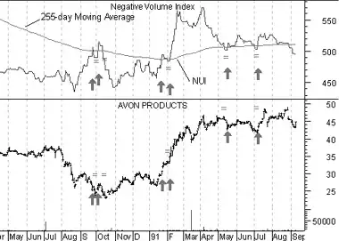
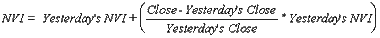

The Negative Volume Index ("NVI") focuses on days where the volume decreases from the previous day. The premise being that the "smart money" takes positions on days when volume decreases.
The interpretation of the NVI assumes that on days when volume increases, the crowd-following "uninformed" investors are in the market. Conversely, on days with decreased volume, the "smart money" is quietly taking positions. Thus, the NVI displays what the smart money is doing.
In Stock Market Logic, Norman Fosback points out that the odds of a bull market are 95 out of 100 when the NVI rises above its one-year moving average. The odds of a bull market are roughly 50/50 when the NVI is below its one-year average. Therefore, the NVI is most usefuly as a bull market indicator.
The following chart shows Avon and its NVI. I drew "buy" arrows whenever the NVI crossed above its 1-year (255-trading day) moving average.
 I drew "equal-signs" when the NVI fell below the moving average. You can see that the NVI did a great job of identifying profitable opportunities.If today's volume is less than yesterday's volume then:

If today's volume is greater than or equal to yesterday's volume then:
Because falling prices are usually associated with falling volume, the NVI usually trends downward.